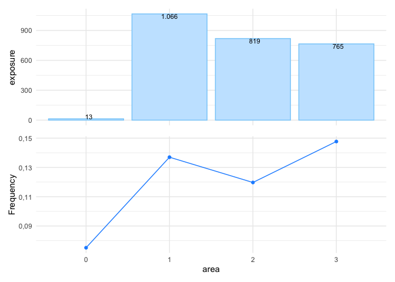
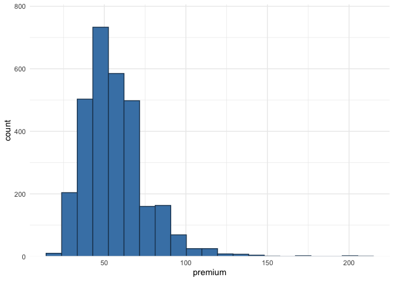
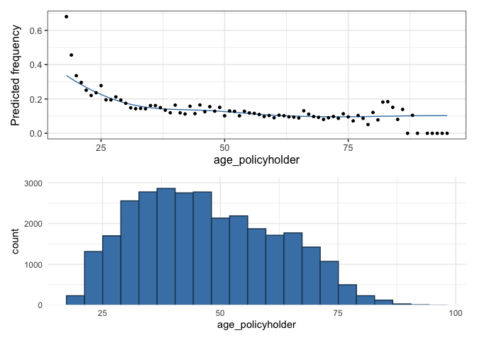
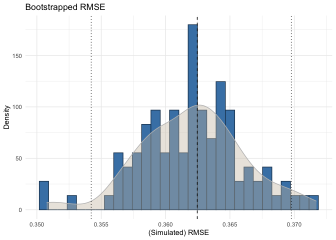

The insurancerating package provides functions to build, evaluate, and visualize insurance rating models. insurancerating simplifies the process of modeling premiums, and allows to analyze insurance risk factors effectively.
Installation
Install insurancerating from CRAN:
install.packages("insurancerating")Or the development version from GitHub:
# install.packages("remotes")
remotes::install_github("MHaringa/insurancerating")Univariate
A univariate analysis focuses on examining the overall claim frequency, severity, and risk premium. The primary objective is to assess whether the experience data is reasonable by comparing it with past experiences and using expert judgment.
This section provides a straightforward example of how to perform a univariate analysis on an MTPL portfolio using insurancerating. univariate() displays the basic risk indicators segmented by the levels of the discrete risk factor:
library(insurancerating)
library(dplyr)
univariate(MTPL2,
x = area, # discrete risk factor
nclaims = nclaims, # number of claims
exposure = exposure,
premium = premium,
severity = amount) # loss## # A tibble: 4 × 10
## area amount nclaims exposure premium frequency average_severity risk_premium
## <int> <int> <int> <dbl> <int> <dbl> <dbl> <dbl>
## 1 2 4063270 98 819. 51896 0.120 41462. 4964.
## 2 3 7945311 113 765. 49337 0.148 70312. 10386.
## 3 1 6896187 146 1066. 65753 0.137 47234. 6471.
## 4 0 6922 1 13.3 902 0.0751 6922 520.
## # ℹ 2 more variables: loss_ratio <dbl>, average_premium <dbl>The following indicators are calculated:
- frequency (i.e. frequency = number of claims / exposure)
- average_severity (i.e. average severity = severity / number of claims)
- risk_premium (i.e. risk premium = severity / exposure = frequency x average severity)
- loss_ratio (i.e. loss ratio = severity / premium)
- average_premium (i.e. average premium = premium / exposure)
Note on Exposure and Risk Premium
In the context of insurance:
- The term exposure refers to the subject or asset that is being insured. For example, an insured vehicle is considered an exposure.
- If a vehicle is insured as of July 1st for a particular year, the insurance company would record this as an exposure of 0.5 for that year. This means that the vehicle was insured for half the year.
Additionally, the term risk premium is used interchangeably with pure premium or burning cost. These terms represent the amount of premium that is required to cover the expected loss, without including any additional expenses or profit margins.
There are additional options available in univariate(), and the following explains the most important ones. univariate() disregards missing input arguments. For example, if premium and severity are not provided, it will only calculate the claim frequency.
univariate(MTPL2, x = area, nclaims = nclaims, exposure = exposure) ## # A tibble: 4 × 4
## area nclaims exposure frequency
## <int> <int> <dbl> <dbl>
## 1 2 98 819. 0.120
## 2 3 113 765. 0.148
## 3 1 146 1066. 0.137
## 4 0 1 13.3 0.0751However, the above table is small and easy to understand, the same information might be presented more effectively with a graph, as shown below.
univariate(MTPL2, x = area, nclaims = nclaims, exposure = exposure) |>
autoplot()
In autoplot.univariate(), show_plots specifies both which plots to display and the order in which they appear. The available plots include:
- frequency
- average_severity
- risk_premium
- loss_ratio
- average_premium
- exposure
- severity
- nclaims
- premium
For instance, to display the exposure and claim frequency plots:
univariate(MTPL2, x = area, nclaims = nclaims, exposure = exposure) |>
autoplot(show_plots = c(6,1))To check whether claim frequency remains consistent over the years is important for identifying trends or irregularities:
set.seed(1)
sample_years <- sample(2016:2019, nrow(MTPL2), replace = TRUE)
MTPL2 |>
mutate(year = sample_years) |>
univariate(x = area, nclaims = nclaims, exposure = exposure, by = year) |>
autoplot(show_plots = 1)
To remove the bars from the plot and display only the line graph, use background = FALSE:
univariate(MTPL2, x = area, nclaims = nclaims, exposure = exposure) |>
autoplot(show_plots = c(6,1), background = FALSE)
sort arranges the levels of the risk factor in descending order based on exposure:
univariate(MTPL2, x = area, nclaims = nclaims, exposure = exposure) |>
autoplot(show_plots = 1, background = FALSE, sort = TRUE)sort_manual allows you to arrange the levels of a discrete risk factor according to your preferred order. This is useful when the levels have a natural sequence or when you want to exclude certain levels from the output.
univariate(MTPL2, x = area, nclaims = nclaims, exposure = exposure) |>
autoplot(show_plots = c(6,1), background = FALSE,
sort_manual = c("2", "3", "1", "0"))
The graph below illustrates additional options:
univariate(MTPL2, x = area, nclaims = nclaims, exposure = exposure) |>
autoplot(show_plots = c(6,1), background = FALSE, sort = TRUE, ncol = 2,
color_bg = "dodgerblue", color = "blue",
custom_theme = ggplot2::theme_bw())Alternatively, you can create a bar graph to display the number of claims; this is the last univariate() plot with options presented here:
univariate(MTPL2, x = area, nclaims = nclaims) |>
autoplot(show_plots = 8, coord_flip = TRUE, sort = TRUE)
In addition to univariate(), another option for one-way analysis is histbin(). This function allows you to create a histogram for continuous variables:
histbin(MTPL2, premium, bins = 20)
In the context of insurance, it is common to encounter outliers in the data, and one way to address this issue is by grouping the outliers into a single bin:
histbin(MTPL2, premium, bins = 10, right = 110)Alternatively, you can apply a logarithmic transformation or remove outliers, but these methods can obscure the original distribution. Grouping outliers into a single bin preserves the overall distribution while providing insight into their quantity.
Continuous variables
This section explains how to get an understanding of the claim frequency and claim severity for continuous variables in the portfolio. As an example, we’ll use the variable age_policyholder in MTPL.
To do this, we fit a Generalized Additive Model (GAM) for age_policyholder. A GAM is a flexible regression model that allows the relationship between the predictors and the response variable to be nonlinear by using smooth functions of the predictors. This makes it easier to capture more complex patterns in the data compared to simpler models that assume a straight-line relationship.
fit_gam() below displays the claim frequency (i.e. number of claims / exposure) for different age groups:
age_policyholder_frequency <- fit_gam(data = MTPL,
nclaims = nclaims,
x = age_policyholder,
exposure = exposure,
model = "frequency")
# Create plot
autoplot(age_policyholder_frequency, show_observations = TRUE) /
histbin(MTPL, age_policyholder, bins = 20)
The figure shows that younger policyholders have a higher risk profile. Since the GAM uses exposure as weights, the fitted line for those under 25 is lower than the observed frequency due to the small number of young policyholders. Similarly, low exposure for policyholders aged 80 to 100 means the GAM has little influence from this group.
In the insurance industry, GLMs (Generalized Linear Models) are often used, so non-linear relationships found in GAMs must be turned into risk-homogeneous categories. The goal is to group continuous risk factors into categorical ones that accurately reflect how these factors affect the response. These categories are then used as levels of the risk factor in the GLM. There are two recommended ways to do this, depending on the goal.
The first method is to bin the GAM output using evolutionary trees, which group policyholders into risk-homogeneous categories based on claim frequency. This approach is best when these bins will be used directly in the final tariff without further refinement. This method is based on Henckaerts et al. (2018); see ?construct_tariff_classes for details. If you plan to refine the bins later, such as by smoothing the premium (that is reducing the tolerance for rate change), it is better to manually select the bins instead of using evolutionary trees. That is the second approach. Both methods are described below.
construct_tariff_classes() generates bins using evolutionary trees:
clusters_freq <- construct_tariff_classes(age_policyholder_frequency)
# Display plot
autoplot(clusters_freq, show_observations = TRUE)The above clearly demonstrates bins with risk-homogeneous categories. It shows that the claim frequency for policyholders aged between 39 and 84 is almost identical. For those over 84, the claim frequency is slightly higher, while young policyholders aged 18 to 25 have the highest claim frequency. The groups aged 25 to 32 and 32 to 39 have slightly lower claim frequencies than the youngest drivers but represent a higher risk than the main group of policyholders aged 39 to 84.
You can follow the same steps for severity by specifying model = "severity" in fit_gam().
The final step is to add new columns to the MTPL data set that translate the age of the policyholders into the corresponding bin(s):
# Create bins manually
policyholder_manual_cat <- seq(18, 95, by = 4)
dat <- MTPL |>
mutate(age_policyholder_freq_evt = clusters_freq$tariff_classes) |>
mutate(age_policyholder_freq_man = cut(age_policyholder,
breaks = policyholder_manual_cat,
include.lowest = TRUE)) |>
mutate(across(where(is.character), as.factor)) |>
mutate(across(where(is.factor), ~biggest_reference(., exposure)))
glimpse(dat)## Rows: 30,000
## Columns: 9
## $ age_policyholder <int> 70, 40, 78, 49, 59, 71, 55, 52, 51, 47, 62, …
## $ nclaims <int> 0, 0, 0, 0, 0, 0, 1, 0, 0, 0, 0, 1, 0, 0, 0,…
## $ exposure <dbl> 1.0000000, 1.0000000, 1.0000000, 1.0000000, …
## $ amount <dbl> 0, 0, 0, 0, 0, 0, 2607, 0, 0, 0, 0, 2890, 0,…
## $ power <int> 106, 74, 65, 64, 29, 66, 43, 55, 100, 66, 44…
## $ bm <int> 5, 3, 8, 10, 1, 6, 2, 2, 1, 2, 1, 2, 2, 9, 5…
## $ zip <fct> 1, 1, 2, 1, 3, 3, 3, 3, 3, 3, 2, 1, 1, 2, 2,…
## $ age_policyholder_freq_evt <fct> "(39,84]", "(39,84]", "(39,84]", "(39,84]", …
## $ age_policyholder_freq_man <fct> "(66,70]", "(38,42]", "(74,78]", "(46,50]", …The last line above sets the base level of the factors (specifically age_policyholder_freq_evt and age_policyholder_freq_man) to the one with the highest exposure. For example, for age_policyholder_freq_evt, the age group (39, 84] is chosen as the base level because it has the most exposure.
Risk premium models
The final step is to create a risk premium using GLMs (Generalized Linear Models). GLMs are widely used in the insurance industry, where claim frequencies are typically modeled with a Poisson GLM and claim severity with a Gamma GLM.
GLMs are favored because they allow for the modeling of complex relationships between predictors and response variables while accommodating various types of response distributions. The Poisson distribution is particularly useful for modeling count data, such as the number of claims, while the Gamma distribution effectively handles continuous, positive response variables like claim severity. By utilizing these models, insurers can accurately assess risk and set appropriate premiums. insurancerating employs the standard glm() function in R to facilitate this process.
Example 1
The following code generates two different models for claim frequency. rating_factors() displays the fitted coefficients:
mod_freq1 <- glm(nclaims ~ age_policyholder_freq_evt,
offset = log(exposure),
family = "poisson",
data = dat)
mod_freq2 <- glm(nclaims ~ age_policyholder_freq_evt + age_policyholder,
offset = log(exposure),
family = "poisson",
data = dat)
rating_factors(mod_freq1, mod_freq2) ## risk_factor level est_mod_freq1 est_mod_freq2
## 1 (Intercept) (Intercept) 0.1179256 0.2458900
## 2 age_policyholder_freq_evt (39,84] 1.0000000 1.0000000
## 3 age_policyholder_freq_evt [18,25] 2.2168483 1.4530987
## 4 age_policyholder_freq_evt (25,32] 1.5176253 1.0739519
## 5 age_policyholder_freq_evt (32,39] 1.2278612 0.9526827
## 6 age_policyholder_freq_evt (84,95] 0.5887492 0.9016893
## 7 age_policyholder age_policyholder NA 0.9867281autoplot.riskfactor() generates a figure of the coefficients. The base level for the factor age_policyholder_freq_cat is the group with the highest exposure, which is displayed first.
rating_factors(mod_freq1, mod_freq2) |>
autoplot()The figure above displays the age groups in a non-natural order, with the group aged 39 to 84 appearing before the group aged 18 to 25. To arrange the ages in their natural order, include model_data in rating_factors() to sort the clustering in the original sequence. Please note that ordering the factor age_policyholder_freq_evt will only work if biggest_reference() is used to set the base level of the factor to the level with the highest exposure.
rating_factors(mod_freq1, mod_freq2, model_data = dat) |>
autoplot()
The following graph presents additional options, for example, including the exposure displayed as a bar graph:
rating_factors(mod_freq1, mod_freq2, model_data = dat, exposure = exposure) |>
autoplot(linetype = TRUE) 
Example 2
This is a basic example which shows how to easily create premiums using insurancerating.
Fit (again) a Poisson GLM and a Gamma GLM:
mod_freq <- glm(nclaims ~ zip + age_policyholder_freq_man,
offset = log(exposure),
family = "poisson",
data = dat)
mod_sev <- glm(amount ~ bm + zip,
weights = nclaims,
family = Gamma(link = "log"),
data = dat |> filter(amount > 0))and multiply them to get the premium:
MTPL_premium <- dat |>
add_prediction(mod_freq, mod_sev) |>
mutate(premium = pred_nclaims_mod_freq * pred_amount_mod_sev)
glimpse(MTPL_premium)## Rows: 30,000
## Columns: 12
## $ age_policyholder <int> 70, 40, 78, 49, 59, 71, 55, 52, 51, 47, 62, …
## $ nclaims <int> 0, 0, 0, 0, 0, 0, 1, 0, 0, 0, 0, 1, 0, 0, 0,…
## $ exposure <dbl> 1.0000000, 1.0000000, 1.0000000, 1.0000000, …
## $ amount <dbl> 0, 0, 0, 0, 0, 0, 2607, 0, 0, 0, 0, 2890, 0,…
## $ power <int> 106, 74, 65, 64, 29, 66, 43, 55, 100, 66, 44…
## $ bm <int> 5, 3, 8, 10, 1, 6, 2, 2, 1, 2, 1, 2, 2, 9, 5…
## $ zip <fct> 1, 1, 2, 1, 3, 3, 3, 3, 3, 3, 2, 1, 1, 2, 2,…
## $ age_policyholder_freq_evt <fct> "(39,84]", "(39,84]", "(39,84]", "(39,84]", …
## $ age_policyholder_freq_man <fct> "(66,70]", "(38,42]", "(74,78]", "(46,50]", …
## $ pred_nclaims_mod_freq <dbl> 0.10057828, 0.13484076, 0.08467235, 0.140216…
## $ pred_amount_mod_sev <dbl> 92178.78, 85686.38, 82808.65, 110644.28, 624…
## $ premium <dbl> 9271.184, 11554.016, 7011.604, 15514.147, 62…Example 3
The previous example provided a basic illustration of how to determine premiums. This example delves deeper into the process of smoothing and applying restrictions to the results. These methods are deduced from the article Third Party Motor Liability Ratemaking with R, by Spedicato, G. (2012).
The MTPL_premium dataset from the previous example is used again. While restrictions could be applied to both frequency and severity models, it is more appropriate to apply restrictions (and smoothing) to the risk premium model. The key idea is that smoothing should be used to limit the tolerance for rate changes, rather than changes in claim frequency or other factors. To achieve this, start by fitting a burning model without any restrictions:
burn_unrestricted <- glm(premium ~ zip + bm + age_policyholder_freq_man,
weights = exposure,
family = Gamma(link = "log"),
data = MTPL_premium) This results in the following coefficients:
rating_factors(burn_unrestricted) ## risk_factor level est_burn_unrestricted
## 1 (Intercept) (Intercept) 1.028917e+04
## 2 zip 1 1.000000e+00
## 3 zip 0 3.540444e-01
## 4 zip 2 7.300316e-01
## 5 zip 3 7.501146e-01
## 6 age_policyholder_freq_man (46,50] 1.000000e+00
## 7 age_policyholder_freq_man [18,22] 2.113100e+00
## 8 age_policyholder_freq_man (22,26] 1.709987e+00
## 9 age_policyholder_freq_man (26,30] 1.417552e+00
## 10 age_policyholder_freq_man (30,34] 1.065554e+00
## 11 age_policyholder_freq_man (34,38] 1.111333e+00
## 12 age_policyholder_freq_man (38,42] 9.547509e-01
## 13 age_policyholder_freq_man (42,46] 1.046178e+00
## 14 age_policyholder_freq_man (50,54] 9.131541e-01
## 15 age_policyholder_freq_man (54,58] 8.234561e-01
## 16 age_policyholder_freq_man (58,62] 7.545319e-01
## 17 age_policyholder_freq_man (62,66] 7.806560e-01
## 18 age_policyholder_freq_man (66,70] 7.276380e-01
## 19 age_policyholder_freq_man (70,74] 7.309279e-01
## 20 age_policyholder_freq_man (74,78] 6.846254e-01
## 21 age_policyholder_freq_man (78,82] 7.978962e-01
## 22 age_policyholder_freq_man (82,86] 1.093200e+00
## 23 age_policyholder_freq_man (86,90] 3.032743e-01
## 24 age_policyholder_freq_man (90,94] 3.763146e-05
## 25 bm bm 1.037382e+00While the table above is concise and easy to interpret, the same information can be presented more effectively through a graph, as shown below. This visualization makes it easier to assess whether the coefficients follow the desired trend:
rating_factors(burn_unrestricted, model_data = MTPL_premium, exposure = exposure) |>
autoplot(risk_factor = "age_policyholder_freq_man")The figure above displays a pattern similar to the GAM; however, it reveals some inconsistencies. For example, the premium for ages 30 to 34 is lower than for the 34 to 38 age group, and then decreases again for the 38 to 42 group. This is undesirable, particularly from a commercial perspective. To address this, smoothing can be applied to reduce the tolerance for rate changes and create a more consistent premium structure.
insurancerating offers smooth_coef() to apply smoothing. The smoothed estimates are incorporated as an offset term in the model. An offset is simply a fixed term added to the linear predictor, so if an offset is already present in the model, the offset terms are combined first (i.e., ).
The simplest approach for smooth_coef() is to fit a polynomial, which is the default setting:
burn_unrestricted |>
smooth_coef(x_cut = "age_policyholder_freq_man",
x_org = "age_policyholder",
breaks = seq(18, 99, 3)) |>
print()In smooth_coef(), x_cut refers to the risk factor with clusters, in this case, “age_policyholder_freq_man”. x_org represents the original risk factor without clustering, here “age_policyholder”. The breaks parameter is a numerical vector specifying the new age groups that are preferred from a commercial standpoint.
autoplot() generates a figure for the smoothed estimates. The blue segments represent the estimates from the unrestricted model, while the black line displays the smoothed coefficients. The red segments indicate the newly estimated coefficients based on the polynomial and the selected age groups. These age groups can be chosen to align with commercial objectives:
burn_unrestricted |>
smooth_coef(x_cut = "age_policyholder_freq_man",
x_org = "age_policyholder",
breaks = seq(18, 93, 5)) |>
autoplot()As illustrated above, the fitted polynomial yields excessively high coefficients for those under age 25 and significantly low coefficients for individuals over age 88, which is undesirable.
The degree can be adjusted to a lower-order polynomial (in this case, set to 1), resulting in a straight line, which is not ideal:
burn_unrestricted |>
smooth_coef(x_cut = "age_policyholder_freq_man",
x_org = "age_policyholder",
degree = 1,
breaks = seq(18, 93, 5)) |>
autoplot()
In most cases, and particularly in this situation, a better alternative is to use a GAM rather than a polynomial:
burn_unrestricted |>
smooth_coef(x_cut = "age_policyholder_freq_man",
x_org = "age_policyholder",
smoothing = "gam",
breaks = seq(18, 99, 3)) |>
autoplot()It is observed that for ages above 80, the fitted line decreases rapidly, despite having very little exposure in this age group. Therefore, the GAM should be weighted by the exposure, resulting in a weighted GAM:
burn_unrestricted |>
smooth_coef(x_cut = "age_policyholder_freq_man",
x_org = "age_policyholder",
smoothing = "gam",
weights = "exposure",
breaks = seq(18, 99, 5)) |>
autoplot() /
autoplot(age_policyholder_frequency, show_observations = TRUE)We now observe a pattern that looks quite desirable (especially when compared to the GAM in the second plot above). In the first plot, we see that for ages above 75, the GAM starts to increase again, which is favorable in this context, as the claim frequency for older drivers is slightly higher. However, for other risk factors, such as vehicle power or sum insured, a wavy pattern is not ideal from a commercial perspective; it may be preferable for these risk factors to demonstrate a monotonic increase or decrease.
To achieve this, smooth_coef() offers options for monotonic increasing (“mpi”) or monotonic decreasing (“mpd”) trends. These are modeled using shape-constrained additive models (SCAMs).
gam <- burn_unrestricted |>
smooth_coef(x_cut = "age_policyholder_freq_man",
x_org = "age_policyholder",
smoothing = "gam",
breaks = seq(18, 99, 3)) |>
autoplot()
mpd <- burn_unrestricted |>
smooth_coef(x_cut = "age_policyholder_freq_man",
x_org = "age_policyholder",
smoothing = "mpd",
breaks = seq(18, 99, 3)) |>
autoplot()
gam / mpdIn addition to smoothing, there is often a need to impose restrictions on the coefficients. For instance, many insurers implement some form of a Bonus-Malus System in vehicle third-party liability insurance. restrict_coef() can be used to apply these restrictions.
In restrict_coef(), restrictions must be a data frame where the first column contains the names of the columns to which the restrictions will be applied, and the second column lists the corresponding restricted coefficients. The following example demonstrates restrictions on the risk factor zip:
zip_df <- data.frame(zip = c(0,1,2,3),
zip_restricted = c(0.8, 0.9, 1, 1.2))
burn_unrestricted |>
restrict_coef(restrictions = zip_df) |>
print()The examples above illustrate how to use smooth_coef() and restrict_coef(). These two functions can be combined, but they must always be followed by update_glm() to refit the GLM. This ensures that the impact of the modified coefficients (resulting from smooth_coef() and restrict_coef()) is taken into account in the fitting of other coefficients. As a result, the values of other coefficients that are not affected by smoothing or restrictions may also be adjusted when refitting the model.
burn_restricted3 <- burn_unrestricted |>
restrict_coef(restrictions = zip_df) |>
smooth_coef(x_cut = "age_policyholder_freq_man",
x_org = "age_policyholder",
smoothing = "gam",
weights = "exposure",
breaks = seq(18, 99, 3)) |>
update_glm()
# Show rating factors
rating_factors(burn_restricted3)## risk_factor level est_burn_restricted3
## 1 (Intercept) (Intercept) 8820.9732105
## 2 zip_restricted 0 0.8000000
## 3 zip_restricted 1 0.9000000
## 4 zip_restricted 2 1.0000000
## 5 zip_restricted 3 1.2000000
## 6 age_policyholder_smooth [18,21] 2.0819663
## 7 age_policyholder_smooth (21,24] 1.8232383
## 8 age_policyholder_smooth (24,27] 1.5759076
## 9 age_policyholder_smooth (27,30] 1.3573220
## 10 age_policyholder_smooth (30,33] 1.1866671
## 11 age_policyholder_smooth (33,36] 1.0764527
## 12 age_policyholder_smooth (36,39] 1.0236651
## 13 age_policyholder_smooth (39,42] 1.0099824
## 14 age_policyholder_smooth (42,45] 1.0082040
## 15 age_policyholder_smooth (45,48] 0.9941858
## 16 age_policyholder_smooth (48,51] 0.9581483
## 17 age_policyholder_smooth (51,54] 0.9049206
## 18 age_policyholder_smooth (54,57] 0.8483375
## 19 age_policyholder_smooth (57,60] 0.8014044
## 20 age_policyholder_smooth (60,63] 0.7689384
## 21 age_policyholder_smooth (63,66] 0.7488122
## 22 age_policyholder_smooth (66,69] 0.7361431
## 23 age_policyholder_smooth (69,72] 0.7286809
## 24 age_policyholder_smooth (72,75] 0.7279182
## 25 age_policyholder_smooth (75,78] 0.7355715
## 26 age_policyholder_smooth (78,81] 0.7503285
## 27 age_policyholder_smooth (81,84] 0.7661830
## 28 age_policyholder_smooth (84,87] 0.7759663
## 29 age_policyholder_smooth (87,90] 0.7760689
## 30 age_policyholder_smooth (90,93] 0.7684741
## 31 age_policyholder_smooth (93,96] 0.7589957
## 32 age_policyholder_smooth (96,99] 0.7495117
## 33 bm bm 1.0372396And visualize them:
# Show rating factors
rating_factors(burn_restricted3) |> autoplot()
If you prefer not to refit the coefficients of the other risk factors—such as when the exposure for the modified coefficients is very low—you can apply only the manual changes and refit the intercept. To do this, use update_glm(intercept_only = TRUE). This will apply the manual changes and refit the intercept, ensuring that the changes have no impact on the other variables.
As the final step, incorporate the refined premiums into the portfolio:
premiums3 <- model_data(burn_restricted3) |>
add_prediction(burn_restricted3)
glimpse(premiums3)## Rows: 30,000
## Columns: 16
## $ age_policyholder <int> 18, 18, 18, 18, 19, 19, 19, 19, 19, 1…
## $ age_policyholder_freq_man_smooth <dbl> 2.081966, 2.081966, 2.081966, 2.08196…
## $ age_policyholder_smooth <chr> "[18,21]", "[18,21]", "[18,21]", "[18…
## $ nclaims <int> 1, 0, 0, 0, 0, 1, 0, 1, 0, 1, 0, 0, 1…
## $ exposure <dbl> 1.000000000, 0.095890411, 0.186301370…
## $ amount <dbl> 261777, 0, 0, 0, 0, 6642, 0, 57540, 0…
## $ power <int> 40, 68, 37, 33, 47, 68, 110, 74, 55, …
## $ bm <int> 3, 5, 3, 1, 6, 1, 1, 2, 2, 2, 5, 4, 2…
## $ zip <fct> 3, 2, 2, 2, 3, 3, 1, 3, 3, 2, 1, 3, 2…
## $ age_policyholder_freq_evt <fct> "[18,25]", "[18,25]", "[18,25]", "[18…
## $ age_policyholder_freq_man <fct> "[18,22]", "[18,22]", "[18,22]", "[18…
## $ pred_nclaims_mod_freq <dbl> 0.28908717, 0.02621662, 0.05093515, 0…
## $ pred_amount_mod_sev <dbl> 67176.26, 74215.89, 68988.66, 64129.6…
## $ premium <dbl> 19419.7940, 1945.6898, 3513.9476, 331…
## $ zip_restricted <dbl> 1.2, 1.0, 1.0, 1.0, 1.2, 1.2, 0.9, 1.…
## $ pred_premium_burn_restricted3 <dbl> 24592.84, 22048.83, 20494.03, 19048.8…Alternatively, you can use model points, which are unique combinations of factors (predictors) that represent different groups of policyholders:
premiums4 <- model_data(burn_restricted3) |>
construct_model_points() |>
add_prediction(burn_restricted3)
glimpse(premiums4)## Rows: 2,392
## Columns: 8
## $ age_policyholder_smooth <chr> "(21,24]", "(21,24]", "(21,24]", "(21…
## $ zip <fct> 1, 1, 1, 1, 1, 1, 1, 1, 1, 1, 1, 1, 1…
## $ bm <int> 1, 2, 3, 4, 5, 6, 7, 8, 9, 10, 11, 12…
## $ zip_restricted <dbl> 0.9, 0.9, 0.9, 0.9, 0.9, 0.9, 0.9, 0.…
## $ age_policyholder_freq_man_smooth <dbl> 1.823238, 1.823238, 1.823238, 1.82323…
## $ count <int> 142, 53, 13, 10, 16, 25, 14, 9, 10, 1…
## $ exposure <dbl> 118.427397, 43.178082, 12.410959, 8.1…
## $ pred_premium_burn_restricted3 <dbl> 15013.49, 15572.58, 16152.50, 16754.0…Example 4
The last example illustrates additional options for model validation and performance evaluation. The methods are presented in a random order and use the models from the previous examples.
model_performance() computes indices of model performance for GLMs:
model_performance(mod_freq1, mod_freq2) ## [34m# Comparison of Model Performance Indices
##
## [39mModel | AIC | BIC | RMSE
## --------------------------------------
## mod_freq1 | 22983.34 | 23024.88 | 0.36
## mod_freq2 | 22943.06 | 22992.92 | 0.36The RMSE (Root Mean Square Error) is the square root of the average squared differences between predicted and actual observations, reflecting how well the model fits the data. It can be interpreted as the standard deviation of the unexplained variance and is expressed in the same units as the response variable.
bootstrap_rmse() computes the RMSE for bootstrap replicates, conducting this process times. Specifically, in each iteration, a sample is drawn with replacement from the dataset, and the model is refitted using this sample. The root mean squared error is then calculated. The following visualizes this:
bootstrap_rmse(mod_freq1, dat, n = 100, show_progress = FALSE) |>
autoplot()
This analysis is useful for assessing the stability of the fitted model’s predictive ability by examining the variation in the computed RMSE. For claim severity models, it can be particularly beneficial to evaluate the RMSE variation when the portfolio includes large claim sizes. It is important to check this variation because a stable model with consistent coefficients is desired; the coefficients should not change significantly when the data varies slightly.
The figure above illustrates that the RMSE variation for the frequency model is quite low, which is expected. The dashed line represents the RMSE of the original fitted model, while the other lines indicate the 95% confidence interval.
check_overdispersion() calculates the dispersion ratio for a Poisson GLM. A dispersion ratio greater than one suggests overdispersion, which occurs when the observed variance exceeds the variance predicted by the theoretical model. If the dispersion ratio is close to one, it indicates that a Poisson model fits the data well. A -value less than .05 also suggests overdispersion. If the dispersion ratio is greater than 2, it may indicate a more significant issue with the data, so it is advisable to check for outliers again.
check_overdispersion(mod_freq1)## dispersion ratio = 1.185
## Pearson's Chi-Squared = 35554.163
## p-value = < 0.001
## Overdispersion detected.check_residuals() calculates standardized residuals from GLMs, scaling them between 0 and 1, making them easier to interpret, similar to residuals from linear models:
check_residuals(mod_freq1, n_simulations = 600) |>
autoplot()
check_residuals() helps identify deviations from the expected distribution and generates a uniform quantile-quantile (QQ) plot. The simulated residuals in the QQ plot above show no significant deviation from a Poisson distribution. Keep in mind that formal tests for residual distribution usually yield significant results, so visual inspections like QQ plots are preferred.
Diagnosing issues in GLMs is challenging because standard residual plots often don’t work well. This is due to the expected data distribution changing with fitted values, which can make it seem like there are issues like non-normality or heteroscedasticity, even if the model is correct. To address this, check_residuals() uses a simulation-based approach to create standardized residuals that can be intuitively understood. This explanation is adopted from the vignette for DHARMa.